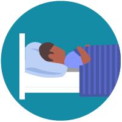

Corona Virus - COVID 19
Coronavirus disease (COVID-19) is an infectious disease caused by a newly discovered coronavirus.
Most people infected with the COVID-19 virus will experience mild to moderate respiratory illness and recover without requiring special treatment. Older people, and those with underlying medical problems like cardiovascular disease, diabetes, chronic respiratory disease, and cancer are more likely to develop serious illness.
The best way to prevent and slow down transmission is be well informed about the COVID-19 virus, the disease it causes and how it spreads. Protect yourself and others from infection by washing your hands or using an alcohol based rub frequently and not touching your face.
The COVID-19 virus spreads primarily through droplets of saliva or discharge from the nose when an infected person coughs or sneezes, so it’s important that you also practice respiratory etiquette (for example, by coughing into a flexed elbow).
At this time, there are no specific vaccines or treatments for COVID-19. However, there are many ongoing clinical trials evaluating potential treatments. WHO will continue to provide updated information as soon as clinical findings become available.
How Coronavirus Spreads throught to be:
Person-to-person spread
The virus is thought to spread mainly from person-to-person.
1. Between people who are in close contact with one another (within about 6 feet).
2. Through respiratory droplets produced when an infected person coughs or sneezes.
These droplets can land in the mouths or noses of people who are nearby or possibly be inhaled into the lungs.
Can someone spread the virus without being sick?
1. People are
thought to be
most contagious when they are most symptomatic (the sickest).2. Some spread might be possible before people show symptoms; there have been reports of this occurring with this new coronavirus, but this is not thought to be the main way the virus spreads.
Spread from contact with contaminated surfaces or objects
It may be possible that a person can get COVID-19 by touching a surface or object that has the virus on it and then touching their own mouth, nose, or possibly their eyes, but this is not thought to be the main way the virus spreads.
How easily the virus spreads
How easily a virus spreads from person-to-person can vary. Some viruses are highly contagious (spread easily), like measles, while other viruses do not spread as easily. Another factor is whether the spread is sustained, spreading continually without stopping. The virus that causes COVID-19 seems to be spreading easily and sustainably in the community (“community spread”) in some affected geographic areas. Community spread means people have been infected w
.......
How to Protect Yourself covid-19 virus

There is currently no vaccine to prevent coronavirus disease 2019 (COVID-19).
The best way to prevent illness is to avoid being exposed to this virus.
The virus is thought to spread mainly from person-to-person. Between people who are in close contact with one another (within about 6 feet). Through respiratory droplets produced when an infected person coughs or sneezes.
These droplets can land in the mouths or noses of people who are nearby or possibly be inhaled into the lungs.
Clean your hands often

Wash your hands often with soap and water for at least 20 seconds especially after you have been in a public place, or after blowing your nose, coughing, or sneezing.
If soap and water are not readily available, use a hand sanitizer that contains at least 60% alcohol. Cover all surfaces of your hands and rub them together until they feel dry.
Avoid touching your eyes, nose, and mouth with unwashed hands.
Avoid close contact

Avoid close contact with people who are sick
Put distance between yourself and other people if COVID-19 is spreading in your community. This is especially important for people who are at higher risk of getting very sick.
Take steps to protect others:
Stay home if you’re sick
Stay home if you are sick, except to get medical care. Learn what to do if you are sick.

Cover coughs and sneezes :
Cover your mouth and nose with a tissue when you cough or sneeze or use the inside of your elbow.
Throw used tissues the trash.
Immediately wash your hands with soap and water for at least 20 seconds. If soap and water are not readily available, clean your hands with a hand sanitizer that contains at least 60% alcohol.

Wear a facemask if you are sick :
1. If you are sick: You should wear a facemask when you are around other people (e.g., sharing a room or vehicle) and before you enter a healthcare provider’s office. If you are not able to wear a facemask (for example, because it causes trouble breathing), then you should do your best to cover your coughs and sneezes, and people who are caring for you should wear a facemask if they enter your room. Learn what to do if you are sick.
2. If you are not sick: You do not need to wear a facemask unless you are caring for someone who is sick (and they are not able to wear a facemask). Facemasks may be in short supply and they should be saved for caregivers.

Clean and disinfect :
Clean AND disinfect frequently touched surfaces daily. This includes tables, doorknobs, light switches, countertops, handles, desks, phones, keyboards, toilets, faucets, and sinks.
If surfaces are dirty, clean them: Use detergent or soap and water prior to disinfection.
Some Information about Corona Virus - COVID 19 in Marathi
समजून घ्या कोरोना' प्रतिकारशक्ती कशी वाढवावी? कोरोनाशी लढताना आपले सगळ्यात मोठे हत्यार असणार आहे आपली प्रतिकारशक्ती. ती वाढवण्याची विशेष काळजी घेताना या काही टिप्स
1. झोप प्रतिकारशक्तीसाठी महत्वाची.
2. आहारात विटामिन सी युक्त सिट्रस फळे, लिंबू, मोसंबी, संत्रे, आवळा, टमाटे आदींचा समावेश करा.
3. नाश्त्यात मोड आलेले कडधान्य, जेवणात डाळी, सोयाबीन, नाचणीची भाकरी असावी.
4. सूर्यप्रकाशातून मिळणाऱ्या ड जीवनसत्वासाठी सकाळी घराच्या छतावर थोडा वेळ ध्यान करा.
5. रोजच्या आहारात एखाद फळ आणि भाज्या असायला हव्या.
6. चहा मध्ये अद्रक आणि जेवणात अधुन मधुन लासनाचा वापर करा.
7. आतड्यातील बॅक्टेरियांसाठी आहारात दही, ताकाचा समावेश करावा. पण दही, ताक रात्रीच्या जेवणात नको. रोज ७ ते ८ तास झोप घ्यावी. अधून मधून लसणाचा वापर करा.
8. ताण घेतल्याने प्रतिकारशक्तीवर त्याचा दुष्परिणाम होतो. त्यामुळे भीतीच्या छायेत राहू नका.
9. शरीरातील पाण्याची पातळी
10. व्यायाम, योग, प्राणायाम आदी व्यायाम रोज अर्धा तास तरी करा.
11.प्रतिकारशक्तीसाठी महत्वाची. तहान लागल्यावर आणि किमान ६ ते ८ ग्लास पाणी प्यायला हवे.